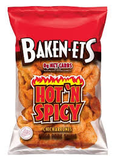

One of my favorite foods is bananas which are the best fruit of them all. yup thats it...... um... spongebob likes em too.
This is lefsa it is a potato bread that is from norway. This is another of mt favorite foods. My great grand mother makes the best lefsa EVERRRR!!!

These are pork rhinds. they are quite delicious and are zero carbs making them a good snack for my diabetes.